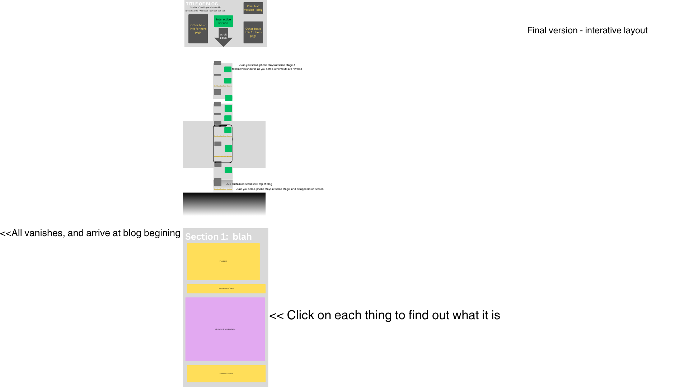
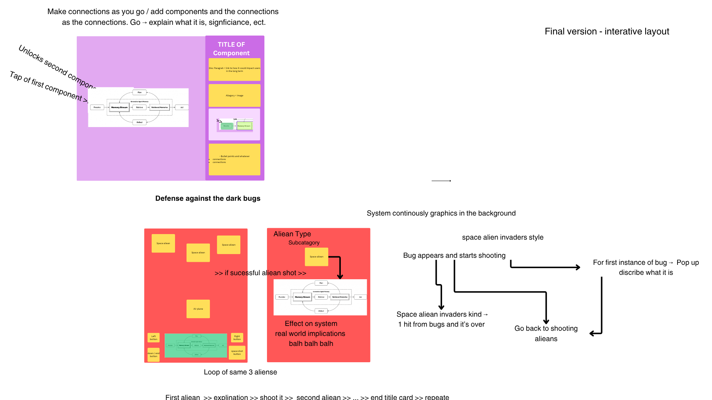

Technical Resources / Implementation
I built this as a web-based interactive blog using a simple stack: HTML, CSS, and JavaScript. I didn’t use any heavy frameworks like React because I wanted full control and something I could realistically build and understand myself. Instead, I mixed my own code with lightweight libraries where it made sense.
- HTML / CSS / JavaScript - core structure, styling, and all interactivity
- AOS (Animate On Scroll) - handles scroll-based animations using
data-aos - Scrollama - helps structure scroll-driven storytelling
- Typed.js - supports dynamic text and typing effects
- starfield.js - custom canvas background animation (the "void" feel)
- hook.js - controls scroll behavior and page interactions
- section2.js - interactive "Build the Agent" diagram
- section3.js - canvas-based mini game (failure simulation)
- Static assets - images and icons for visuals
- External sources - Medium article and research links (Gartner, arXiv, YouTube)
- Deployment - static site (GitHub Pages style), no backend
The main idea: I used libraries when it saved time (animations, effects), but kept the important logic custom so I still understood and controlled everything.
Genre Conventions (Why This Format Works)
This isn’t just a normal essay—it’s a mix of interactive narrative, explainer, and simulation. I structured it so users move through it naturally instead of just reading blocks of text.
- Hook (story) -> explanation -> system breakdown -> failure simulation -> real-world takeaway
- Scroll-based storytelling to guide pacing
- Styled text + visuals to keep it engaging
- Interactive components instead of just static writing
The interactivity isn’t just for aesthetics—it lets users actually experience how AI systems behave and fail, which is way more effective for a non-technical audience than a traditional paper.
For accessibility, I also provide a simpler version of the blog with a more straightforward script so the content is still readable without the interactive elements.
Methodology (How I built it)
Before coding, I planned the project in Canva by mapping the story flow, interaction points, and visual structure. This helped me figure out what the site needed before I started building: a scroll-based progression, interactive explanations, accessible language, embedded research, and one guiding question that kept the project focused.


Conceptually, I wanted the project to combine the technical clarity of Distill-style explainers with the interactive storytelling style of The Pudding. The goal was to make agentic AI understandable for everyday users by letting them do things, not just read about them.
- Plan: mapped the structure, visuals, and interaction goals in Canva
- Prototype: built small sections first instead of trying to finish everything at once
- Build: used HTML, CSS, JavaScript, and lightweight libraries for animation/scroll effects
- Test: checked whether the interactions, visuals, and explanations worked together
- Refine: revised language, layout, and technical behavior to make the blog clearer and smoother
This process was iterative: I planned the concept over a longer period, then used a focused build sprint to turn the design into a working static website. I kept the tech stack simple on purpose, used libraries where they saved time, and focused my custom coding on the parts that mattered most: the interactive diagram, scroll behavior, animated background, and failure-simulation game.
This also supports the rubric because the method connects technology, genre, audience, and purpose: the code is not just decorative, but used to help readers understand how AI agents work, how they fail, and how users can respond.